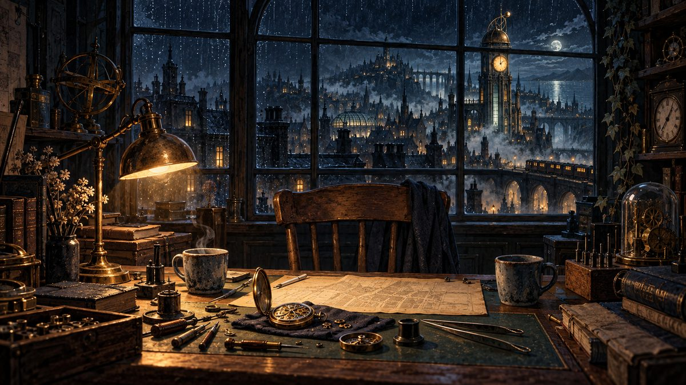

Atlas of Meridia
Every place the story visits, what opens each chapter, and how the tale of the held second ends.
On this page
Warning: This page contains spoilers for the whole story, including the ending. Read on only if you have finished the game or do not mind knowing.
The story is told through transmissions in City and Journal, each one a chapter you read as a few illustrated pages. Chapters arrive as you reach milestones, and all story is free for everyone. The map Iona drew shows six districts around an empty circle.
The chapters and the places
| # | Chapter | Place | What opens it |
|---|---|---|---|
| 1 | The letter | The Workshop | Available from the beginning |
| 2 | A voice between ticks | The Workshop | Catch a pulse, or earn 35 lifetime Moments |
| 3 | The unfinished delivery | Rainward Steps | Install four machines, or earn 25,000 lifetime Moments |
| 4 | What the glass remembers | The Glass Orchard | Record six discoveries |
| 5 | The first Fold | The Meridian Station | Complete your first Fold |
| 6 | The repeating sea | The Tidal Archive | Earn 15 lifetime Chronons |
| 7 | Two windows, one light | The Twin Observatories | Earn 60 lifetime Chronons |
| 8 | The room behind midnight | The Bell at the Edge | Record sixteen discoveries and complete three Folds |
| 9 | A tomorrow with room | The Bell at the Edge | Record all twenty-four discoveries and complete five Folds |
| 10 | The seventh platform | Meridian Station | Complete seven Folds |
| 11 | Eighteen lights beyond the wall | The Unwritten Coast | Complete eighteen Folds |
| 12 to 15 | The Overwound Quarter | See the Overwound Quarter | Complete two Folds |
| 16 to 20 | The Mending Rooms | See the Mending Rooms | Expand to the Orbital ring, or record eight discoveries |
Highlights from the main story
Rainward Steps. Senn crosses Wren Street a thousand times, always ending at the same doorstep. With four machines in rhythm, you make a path long enough for one delivery. The oldest letter reads: "I was angry. Come home anyway."
The Glass Orchard. A municipal greenhouse has become an orchard of glass, each fruit holding a small ordinary day: breakfast, an argument, someone learning a song. Iona's recording warns: "Memories are not fuel. Don't burn the good days to buy more of them."
The Tidal Archive. The tide climbs the same stair every thirty seconds, above a lost-property office for possibilities. Here the Counter first faces Mara's question: "Stable for whom?"
The Twin Observatories. Two windows show two versions of one street. Iona appears for a moment, older than her photograph: "I kept trying to find the one right choice. Then I realised the city needed room for people to choose differently."
The Bell at the Edge
The brass key opens a door inside the clock, and behind it is the station on the night of the interruption. Iona had learned that the Counter would close every uncertain route at midnight, leaving the people still travelling on them nowhere to arrive. She held the final second open while she searched for a way to bring them through. She never meant to become its keeper forever.
Her notes cover the walls, and near the bottom, in a steadier hand, she has written: "Cannot do this alone. Stop pretending otherwise." Beneath it is your address.
The Counter's terminal still holds a single question: "Are all routes accounted for?" In the next chapter, it has learned to ask who is still outside before it closes a street.
Edda Rook, the lighthouse keeper
You meet Edda Rook when the Bell at the Edge opens. Her line: "There's a harbour beyond your map. It's been waiting." Her one goal is to choose the city's promise, then come and find her lighthouse.
The ending: three promises
In the final chapter, nobody tells you what to choose. Iona places the key on your bench and tells you there is no perfect city waiting behind this one. You can't choose everyone's future, only the promise your workshop will keep. You ring the bell and pick one:
- Keep a light for those returning.
- Leave room for another route.
- Remember every borrowed second.
Each has its own epilogue, and all three begin the same way: the rain reaches the pavement. In the first, Mara's train arrives with every window lit and you hang a lamp over the workshop door. In the second, Senn takes a street that was not on yesterday's map, and you leave an empty space in every blueprint. In the third, the Glass Orchard's memories become stories people tell each other, and you begin a ledger of names instead of numbers, with its last page left blank.
All three end the same way: somewhere beyond Meridia, another clock answers yours.
After the ending
The seventh platform. On your seventh Fold, a platform appears between platforms six and eight that no timetable admits exists. Mara sends a recording of footsteps, a bicycle bell and a child asking if this is the way home. Senn recognises the bell: it had a flat note, and belonged to a courier who took the coast road a week before the clocks stopped.
The Unwritten Coast. At your eighteenth Fold, eighteen lamps appear beyond Meridia's wall, each burning at a different hour. A damp letter arrives with a drawing of your workshop seen from the ocean. On the back: "We kept a second for you, too." The Counter asks whether it may add the eighteen lamps to its map before it understands them, and Mara tells it that is what maps are for.
See also the held second and characters.